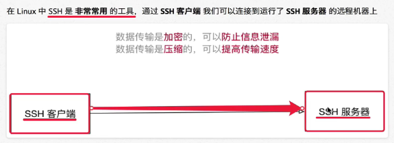

关机
shutdown 关机
shutdown -r 重新启动
不指定选项和参数，默认1分钟后关闭电脑
远程维护服务器时，最好重启系统，不要关机
shutdown -r now
shutdown 20:25
shutdown 10 十分钟后关闭
shutdown -c 取消操作
sudo shutdown -r 用高级用户的权限执行
查看或配置网卡信息
ifconfig ：查看/配置计算机当前的网卡配置信息
一台计算机中有可能会有一个物理网卡和多个虚拟网卡，在Linux中，
物理网卡的名字通常以ensXX表示
ping ip地址 ：检测到目标ip地址的连接是否正常
一般检测当前计算机到目标计算机之间的网络是否通畅，
数值越大，速度越慢
网卡：负责网络通讯的硬件设备，是一块被设计用来
允许计算机在计算机网络上进行通讯的计算机硬件，
其拥有MAC地址
ifconfig | gred inet
终止一个终端程序的执行：ctrl+c
SSH
SSH客户端是一种使用Secure shell协议连接到远程计算机的软件程序



ssh -p 22 python@172.16.140.138
scp(只能在Linux和Unix系统下使用)
secure copy：是一个在Linux下用来进行远程拷贝文件的命令
在指定端口时用的是大写 -P
文件
scp -P port 01.py user@remote:Desktop/01.py
scp -P port user@remote:Desktop/01.py 01.py
scp -P 00 01.py python@172.16.140.138:Desktop 将文件01.py传到远程桌面下
文件夹
scp -r demo user@remote : Desktop
scp -r user@remote : Desktop demo
scp -P 22 -r python@172.16.140.138 : Desktop demo
FileZilla
Windows下传输数据
免密码登录
公钥、私钥
配置别名
在~/.ssh/config里面追加以下内容：
Host mac
HostName ip地址
User itheima
Port 22
保存之后，可以用ssh mac实现远程登录
touch config
gedit config 打开，添加配置，保存
scp -r ~/Desktop mac:Desktop/demo 将文件传到服务器上